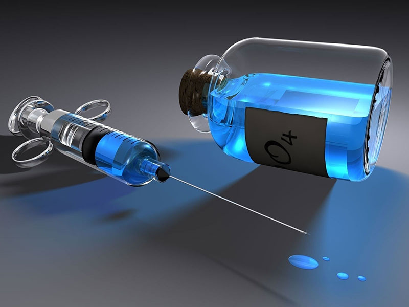

Kako višak kože nastaje nakon velikog gubitka kilograma i koje su opcije korekcije
Veliki gubitak telesne težine predstavlja važan korak ka zdravijem načinu života. Mnogi ljudi godinama rade na promeni navika u ishrani, povećanju fizičke aktivnosti i postepenom smanjenju telesne mase. Ipak, nakon što se postigne željeni broj kilograma, veliki broj osoba suočava se sa novim estetskim i funkcionalnim izazovom – viškom kože.
Iako se masno tkivo značajno smanjuje tokom procesa mršavljenja, koža koja se godinama prilagođavala većem volumenu tela često ne može u potpunosti da se povuče. Kao rezultat nastaju opušteni kožni nabori koji se najčešće javljaju na stomaku, butinama, nadlakticama i donjem delu leđa.
Za mnoge osobe ovo nije samo estetsko pitanje. Višak kože može uzrokovati iritaciju, otežati fizičku aktivnost i stvoriti osećaj nelagodnosti tokom svakodnevnih aktivnosti. Razumevanje zašto dolazi do ove pojave i koje su opcije korekcije predstavlja prvi korak ka donošenju informisane odluke o daljim estetskim zahvatima.
Zašto dolazi do viška kože nakon mršavljenja
Koža je najveći organ ljudskog tela i ima sposobnost prilagođavanja promenama volumena. Tokom perioda povećanja telesne težine, koža se postepeno rasteže kako bi pratila rast masnog tkiva. Međutim, elastičnost kože ima svoje granice.
U strukturi kože nalaze se vlakna kolagena i elastina. Kolagen obezbeđuje čvrstinu i strukturu, dok elastin omogućava koži da se istegne i vrati u prvobitni oblik. Kada je koža duži vremenski period izložena značajnom istezanju, ova vlakna mogu izgubiti deo svoje elastičnosti.
Kada osoba izgubi veliku količinu kilograma, masno tkivo se smanjuje, ali koža koja je bila rastegnuta često nema dovoljno elastičnosti da se potpuno prilagodi novoj konturi tela. Zbog toga nastaju opušteni kožni nabori koji mogu biti blagi ili veoma izraženi.
Faktori koji utiču na količinu viška kože
Količina viška kože nakon mršavljenja zavisi od više faktora. Jedan od najvažnijih faktora jeste starost. Kako godine prolaze, proizvodnja kolagena u koži se smanjuje, što dovodi do gubitka elastičnosti.
Ukupan gubitak telesne težine takođe igra značajnu ulogu. Osobe koje izgube desetak kilograma često imaju minimalan višak kože, dok kod onih koji izgube trideset, četrdeset ili više kilograma kožni nabori mogu biti znatno izraženiji.
Trajanje perioda gojaznosti takođe je važan faktor. Što je koža duže bila izložena povećanom volumenu, manja je verovatnoća da će se sama povući. Genetski faktori, kvalitet kože i način života takođe mogu uticati na proces regeneracije.
Regije tela gde se višak kože najčešće pojavljuje
Višak kože nakon mršavljenja može se pojaviti na različitim delovima tela. Najčešće pogođena regija je stomak. U tom području često dolazi do formiranja opuštenog kožnog nabora koji može prekrivati donji deo stomaka.
Nadlaktice su takođe česta regija gde dolazi do opuštanja kože. Ovaj problem može biti posebno izražen kod osoba koje su izgubile veliku količinu kilograma.
Butine, naročito njihova unutrašnja strana, mogu razviti višak kože koji uzrokuje trenje tokom hodanja ili fizičke aktivnosti. Kod nekih osoba višak kože može se pojaviti i na leđima ili u predelu bokova.
Kada nehirurške metode nisu dovoljne
Mnoge osobe pokušavaju da poboljšaju izgled kože kroz fizičku aktivnost, masaže ili estetske tretmane. Vežbanje može ojačati mišiće i poboljšati tonus tela, ali ne može ukloniti višak kože.
Kozmetički tretmani poput radiofrekvencije ili laserskih procedura mogu doprineti blagom zatezanju kože, ali kod izraženog viška tkiva njihov efekat je ograničen.
U situacijama kada postoji značajan višak kože, jedino trajno rešenje predstavlja hirurška korekcija kojom se višak tkiva uklanja, a preostala koža zateže i prilagođava novoj konturi tela.
Abdominoplastika kao rešenje za stomak
Abdominoplastika je jedan od najčešćih zahvata kod osoba koje su izgubile veliku količinu kilograma. Ovaj zahvat podrazumeva uklanjanje viška kože i masnog tkiva sa predela stomaka, uz zatezanje trbušnih mišića ukoliko je to potrebno.
Rezultat operacije je ravniji stomak i zategnutija kontura tela. Kod mnogih pacijenata ovaj zahvat značajno poboljšava kvalitet života jer uklanja kožne nabore koji mogu izazivati iritaciju i nelagodnost.
Abdominoplastika se obično razmatra tek nakon što se telesna težina stabilizuje i kada osoba dostigne svoju ciljnu težinu.
Body contouring – korekcija više regija tela
Kod osoba koje su izgubile veoma veliki broj kilograma višak kože često nije ograničen samo na jednu regiju. U tim situacijama razmatraju se body contouring operacije.
Ovi zahvati imaju za cilj oblikovanje tela uklanjanjem viška kože na više delova tela kako bi se postigla proporcionalna i prirodna silueta.
Body contouring može uključivati korekciju stomaka, zatezanje nadlaktica, lifting butina ili korekciju kože na leđima. Plan operacije uvek se prilagođava individualnim potrebama i anatomiji pacijenta.
Zašto je stabilna težina važna pre operacije
Pre razmatranja hirurške korekcije veoma je važno da telesna težina bude stabilna. Ako se operacija izvodi dok se težina i dalje menja, postoji veći rizik da će rezultati biti kompromitovani.
Zbog toga se obično preporučuje da telesna težina bude stabilna najmanje nekoliko meseci pre planiranja operacije. Stabilna težina omogućava preciznije planiranje zahvata i dugoročnije rezultate.